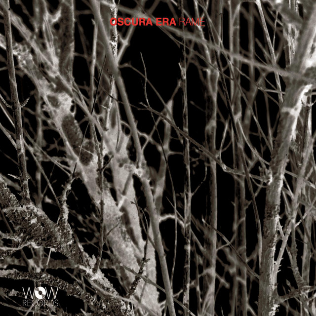
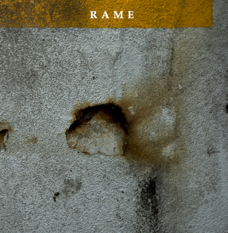

Works

Today's Office
2026 • Self Produced
Una raccolta di sette brani per pianoforte solo.

Sentiero
2023 • Encore Music
Il debutto da band leader di Mauro Spanò è un viaggio di profonda ricerca interiore, un cammino in cui la ricerca artistica si fonde strettamente con quella personale. Diviso simmetricamente tra quattro brani originali e quattro arrangiamenti di opere profondamente care all'autore, il disco vede la straordinaria partecipazione del clarinettista Gabriele Mirabassi in alcune tracce. Il risultato è un affresco sonoro capace di evocare, come sottolineato dalla critica, “elucubrazioni impressionistiche e fascinazioni scandinave”.

Kurt!
2021 • Velut Luna
Un'opera ideata dalla cantante Valentina Fin che esplora e sviluppa una ricerca dedicata alla figura di Kurt Weill, celebre compositore tedesco del primo Novecento. La formazione, dal respiro cameristico, affianca il classico quartetto d'archi al duo pianoforte e voce. Gli arrangiamenti, curati da Mauro Spanò, rielaborano le partiture originali o si sviluppano da zero in chiave inedita e contemporanea. Le stesse atmosfere, in bilico tra jazz e classica d'avanguardia, rivivono anche nei brani originali scritti appositamente per l'ensemble, ispirati alle poesie dello storico collaboratore di Weill, Bertolt Brecht.

Oscura Era
2021 • Wow Records
Il secondo lavoro discografico dei RAME, scritto e registrato durante il difficile periodo della pandemia. L'album eredita dal precedente il legame tra testi e opere letterarie, ma si muove verso strutture compositive meno rigide, lasciando ampio spazio all'improvvisazione libera. Gli arrangiamenti si spingono verso territori vicini al Free Jazz e alla musica colta contemporanea, mentre il titolo stesso trae ispirazione dal saggio “New Dark Age” di James Bridle.

Rame
2018 • Emme Record Label
Il debutto discografico del quintetto RAME, progetto nato nel 2016 tra le aule del Conservatorio di Vicenza. Partendo da una matrice tipicamente jazz, fondata sulla ricerca dell'improvvisazione e dell'interplay, l'album raccoglie composizioni originali firmate da tutti i componenti del gruppo. I brani e i testi traggono profonda ispirazione da opere intramontabili della letteratura e della cultura italiana. Chiude il disco la title track, un'improvvisazione estemporanea che segna l'inizio della sperimentazione sonora che il quintetto porterà avanti negli anni successivi.